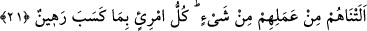

sırrına işârettir. İlahi gayret, bir sırrın ehli olmayana açıklanmayacağı gibi, onun
başkalarına ızhar edilmemesini gerektirir. Ayrıca helâllik ve mahremiyet, birer
yükümlülük unsurlarıdır. Oysa cennette böyle bir yükümlülük yoktur. Dolayısıyla bu ve
benzeri şeylerin, ancak lezzet alma açısından olduğu söylenebilir.
21. Îman eden ve soylarından gelenler de, îmanda kendilerine tâbi olanlar (var
ya)! İşte biz, onların nesillerini de kendilerine kattık. Onların amellerinden de bir
şey eksiltmedik. Herkes kazandıklarına karşı bir rehindir.
“Îman eden ve soylarından gelenler de, îmanda kendilerine tâbi olanlar (var ya)!”
Âyette “îman” kelimesinin nekre olarak getirilmesinin sebebi, azlığı beyân içindir.
Yâni “îmandan az bir cüz” demektir. Îmanın az bir cüz olarak getirilmesi, amellerin
buna dâhil oluşuna mebnî bulunmadığı gibi, bu îmanın semeresinin azlığını ve bu
nedenle de mikdarının eksik oluşunu ifâde etmektedir. Burada îmanın az kılınışı, onu
ayıplamak içindir. O halde buranın anlamı: “Zürriyetleri de genel mânâda atalarının
îman mertebelerinden düşük bir îmanla onlara tâbi olmuşlardır” şeklindedir. Buraya bu
kaydın konması, “cennete girme hükmü”nün îman-ı kâmilde “ilhâkan” değil “asâleten”
sâbit olduğunu bildirmek içindir.
“İşte biz, onların nesillerini de kendilerine kattık.” Yâni îman derecesinde küçük ve
büyük çocuklarını da kendilerine katmışızdır. Nitekim bununla ilgili olarak bir hadis-i
şerifte: “Allah Teâlâ bir mü’minin zürriyyetini, her ne kadar zürriyeti îmanî yönden
aşağı seviyede iseler de, o kişinin gözü aydın olması için îman derecesi ölçüsünde
yüceltir”[41] buyurduktan sonra bu âyet-i kerîmeyi okumuştur.
Bu âyet-i kerîmede, küçük çocuk ebeveyninden birine ittibâ ve onu taklide meyl
sûretiyle îman ettiği zaman onun mü’min olduğuna hükmedilmesine dâir açık bir işâret
vardır. Zira Allah Teâlâ onları ebeveynlerine tâbi kılıp âhiret ahkâmında da onlarla aynı
kefeye koyduğu için çocukların dünya ahkâmında da ebeveynlerine tâbi sayılmaları
gerekir.
Fethu’r-Rahman’da şöyle denilir: Îman etmiş olmaları sebebiyle büyük-küçük
çocuklar mü’min anne ve babalarına tâbi olurlar. Bu çocuklardan büyüğün îmanı bizzat
kendi tarafından, küçüğün ki ise ebeveynini taklit cihetindendir. Zira çocuk İslâm’a
girdiği zaman onun müslümanlığına ebeveyninden birini taklid etmesiyle hükmolunur.
Bu, Ebû Hanife, Şâfiî ve İmam Ahmed’in görüşüdür. İmam Mâlik ise annesinin değil de
babasının müslüman oluşuna ittibâ ile böyle hüküm verildiği kanâatindedir. Ancak
ebeveyninden biri Daru’l-İslâm’da vefat ederse bu takdirde o çocuğun müslüman